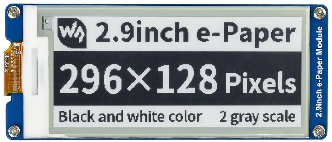

[RTL8722CSM] [RTL8722DM] Display User-Generated QR Code on E-Paper¶
Materials
Ameba x 1
Waveshare 2.9inch e-Paper HAT (D) x 1
Example
In this example, we use the Ameba RTL8722 module connects to a Waveshare
2.9inch e-Paper module to display a few QR codes. The display uses the
flexible substrate as the base plate, with interface and a reference
system design.The 2.9” active area contains 296×128 pixels and has 1-bit
white/black full display capabilities. An integrated circuit contains
gate buffer, source buffer, interface, timing control logic, oscillator,
etc… are supplied with each panel. You may refer to the
official 2.9inch e-Paper HAT (D)
datasheet to
know more about this module. Front view of the e-Paper
Module:RTL8722 wiring diagram:
 Firstly, you need
to open the “DisplayQR” example in “File” -> “Examples” -> “AmebaEink”
-> “EinkDisplayQR”:
Firstly, you need
to open the “DisplayQR” example in “File” -> “Examples” -> “AmebaEink”
-> “EinkDisplayQR”: Modify the URL in the loop() section as
your wish, after that, verify and upload the code to the Ameba board.
Upon successfully upload the sample code and press the reset button, a
QR code generated based on the URL of your input will be shown on the
E-Paper module. The QR code showing below leads to our Ameba IoT
official website: Ameba
ARDUINO
Modify the URL in the loop() section as
your wish, after that, verify and upload the code to the Ameba board.
Upon successfully upload the sample code and press the reset button, a
QR code generated based on the URL of your input will be shown on the
E-Paper module. The QR code showing below leads to our Ameba IoT
official website: Ameba
ARDUINO
{kind=link}
Code Reference